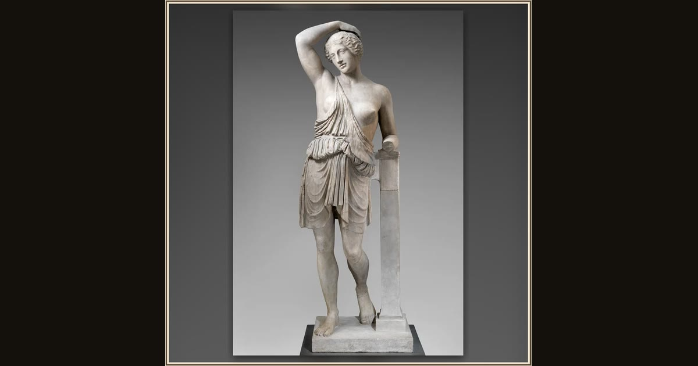

Marble statue of a wounded Amazon
Roman · 1st–2nd century CE · met
A wounded Amazon leans against a support in a Roman marble statue; Socrates argues that women should study music, gymnastic and warfare alongside men (452a). Explore its place in Plato's Republic, Book V, section 15.